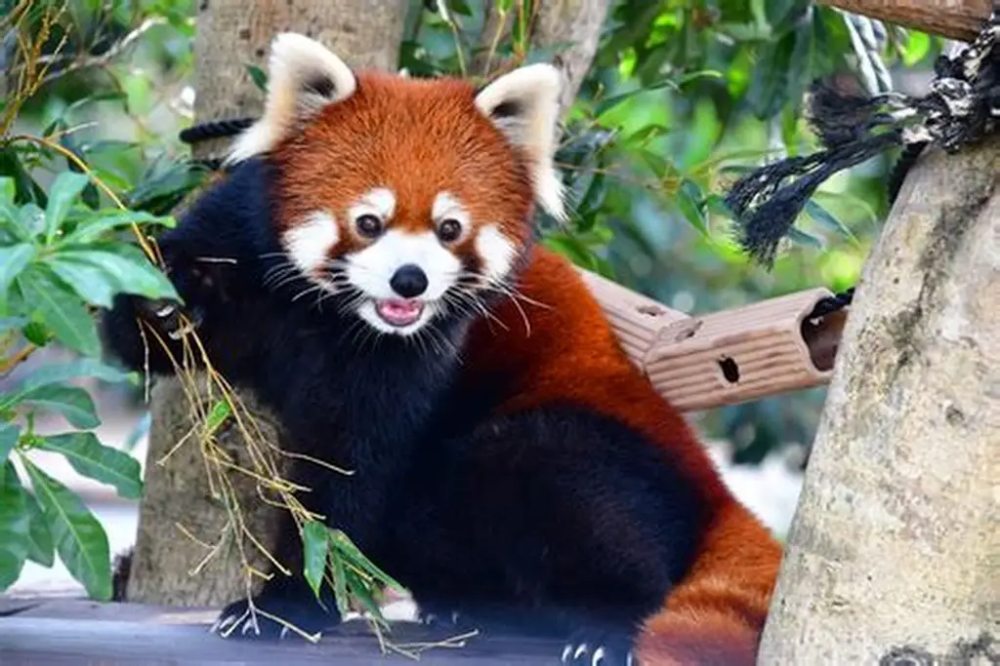
Panda Rojo
Tierno, tímido y amante del bambú. Este pequeño mamífero vive en los bosques montañosos y es conocido por su carita adorable.
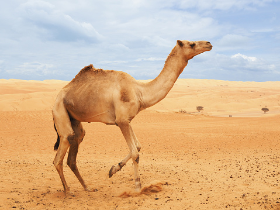
Camello Árabe
Resistente, fuerte y adaptado al desierto. Puede pasar días sin agua y soportar temperaturas extremas.

Lince Ibérico
Ágil, sigiloso y elegante. Es uno de los felinos más raros del mundo y un símbolo de conservación.
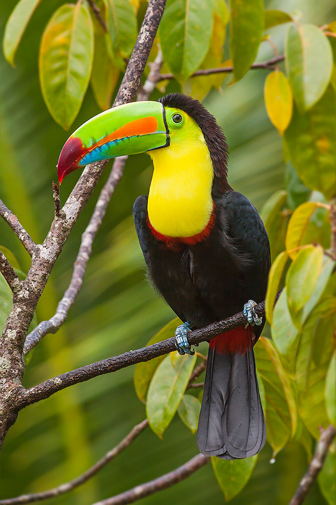
Tucán de Pico Arcoíris
Colorido, tropical y muy llamativo. Su enorme pico multicolor lo convierte en una de las aves más icónicas de la selva.
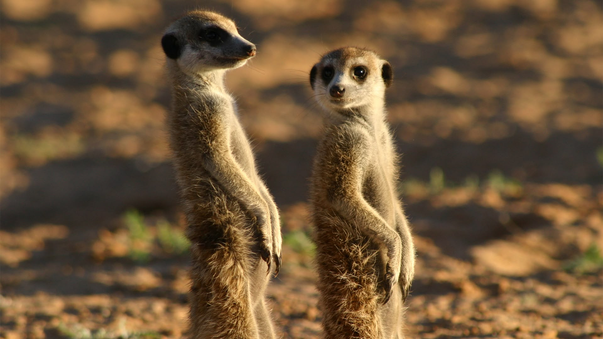
Suricata
Alerta, social y muy simpática. Vive en grupos y siempre hay una vigilando el horizonte.
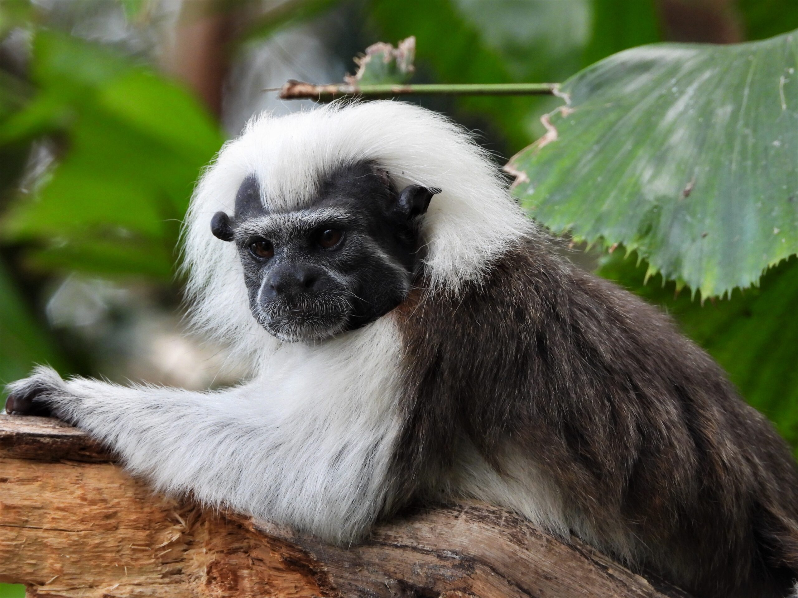
Mono Titi
Pequeño, hiperactivo y adorable. Es uno de los monos más pequeños del mundo.
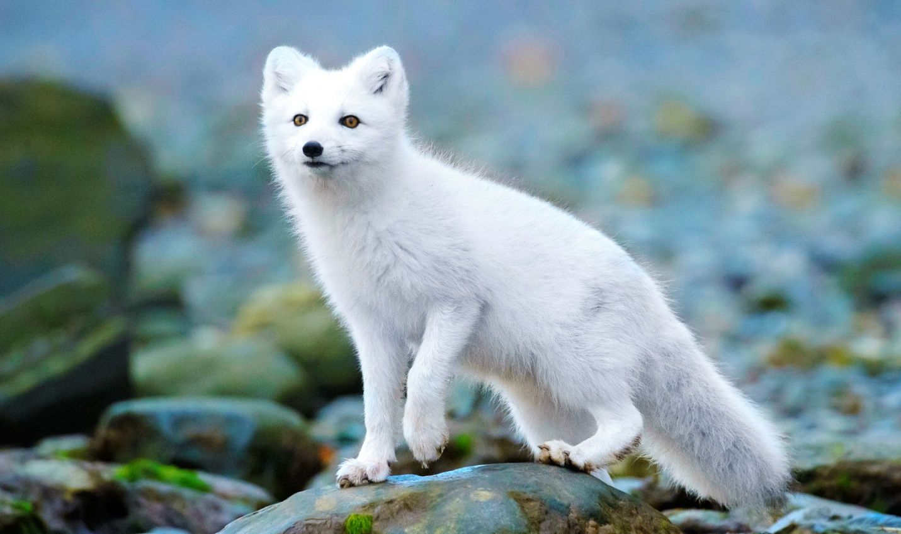
Zorro Ártico
Hermoso, resistente y silencioso. Su pelaje cambia de color según la estación para camuflarse.
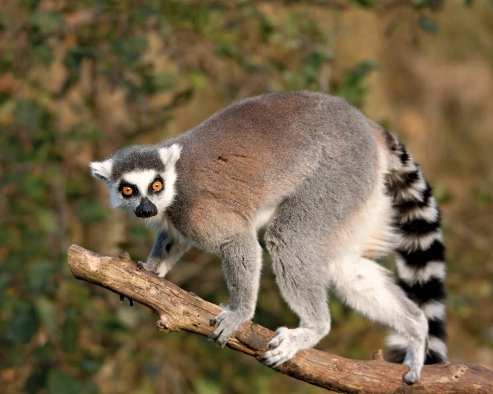
Lemur
Ágil, curioso y muy expresivo. El lemur vive en Madagascar y es famoso por sus grandes ojos brillantes y su cola anillada. Es un animal social que pasa el día saltando entre árboles y comunicándose con sonidos únicos.
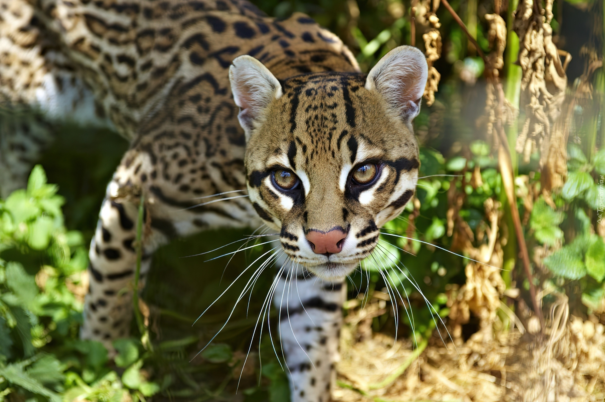
Ocelote
Elegante, sigiloso y con un pelaje espectacular. Es un felino nocturno que habita en selvas tropicales.
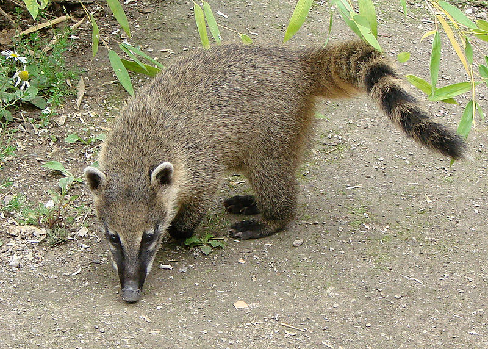
Coatí
Travieso, inteligente y muy sociable. Su nariz larga y flexible lo ayuda a explorar todo.Pequeño, hiperactivo y adorable. Es uno de los monos más pequeños del mundo.
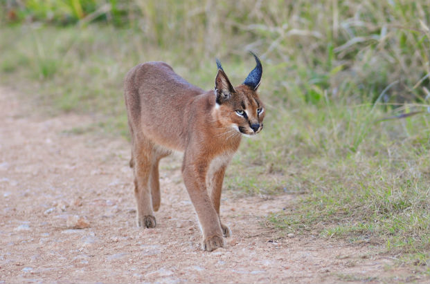
Caracal
Elegante, rápido y con orejas puntiagudas únicas. Es un cazador experto de movimientos precisos.
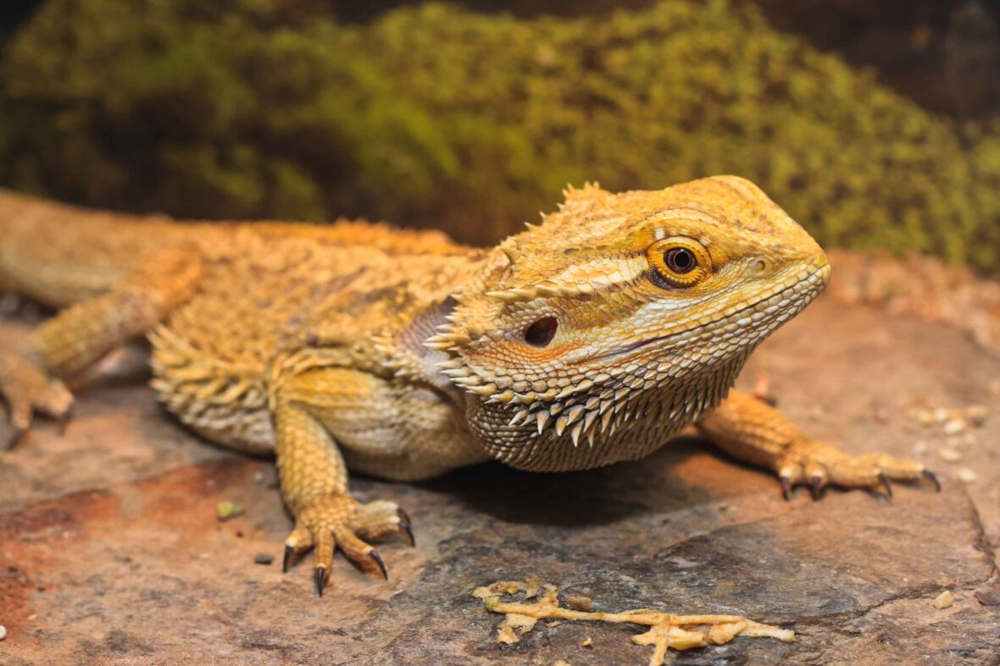
Dragón Barbudo
Tranquilo, curioso y muy expresivo. Este reptil es famoso por su “barba” que se infla cuando se siente emocionado.